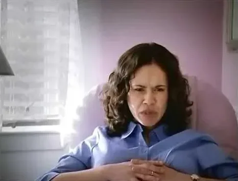

Commercials
I’ve been fortunate to be in a handful of commercials.
Southwest Airlines
Back in February of 1999, I was fortunate enough, after much auditioning, to land my first commercial. It was for Southwest Airlines and part of their “Need To Get Away?” campaign.
The two women in the spot with me are Judy Reyes and Sarah Clarke. Judy was on the NBC TV show “Scrubs” as nurse Carla Espinosa and later on “Jane the Virgin”, while Sarah was Nina Myers on Fox’s “24” and more recently played Bella’s mother in the Twilight movies.
The spot was directed by two very good directors, Rick LeMoine and Steve Miller.
The video is a compilation of Southwest spots; it starts at my commercial (2:29).

Play video: Kmart (Baby/Bebé)Kmart (Baby/Bebé)
I don’t remember what year this commercial ran, but it was my first and only Spanish-language spot.
No me acuerdo en qué año salió esta propaganda, pero fue mi primera y única en español.
 Play video: Sears (Hints)
Play video: Sears (Hints)Sears (Hints)
I had auditioned for a different Sears spot about diamonds (the Upright Citizens Brigade co-founder Matt Walsh got that one). Instead, after I booked, the director David Shane decided to put me in a spot about a man trying to hint to his wife that he wants new sneakers and jeans.
The actor playing my wife was Gabriella Madé (pronounced Mah-day). She was great, and we had lots of fun on the set.
We shot more footage than you see in the final commercial. Part of what we did was shoot me eating a peanut butter and jelly sandwich (the first time I used a spit bucket), which was to be cut with another shot of Gabriella pulling a mangled sneaker away from the family dog. There was a whole other sequence with my character tricking his wife into spilling coffee on his jeans. I think we must’ve done around 20 takes of that.